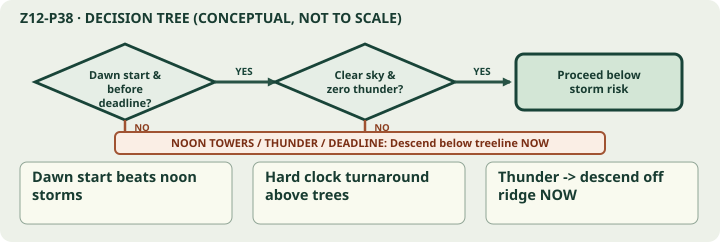

Z12-P38 · Extreme environments · New manuscript
Time alpine climbs for early starts and below-treeline retreat before noon storms
Clear exposed alpine ridges and summits before afternoon convective thunderstorms and lightning develop.
When it applies · Above-treeline trails, alpine passes and exposed mountain peaks during late spring through early autumn.
Equipment · Watch with hard summit turnaround time, headlamp for dawn start and mapped below-treeline bailout routes.

Actions
- Start early (often at or before dawn) on above-treeline objectives so your party crosses high passes and starts descending WELL BEFORE midday convective cumulus clouds build into storms.[X10, N06, E07]
- Set a hard clock turnaround time before leaving the trailhead—if you have not reached the summit or pass by that hour, TURN AROUND immediately regardless of how close the top looks.[X10, E01, E07]
- Remember that once thunder is heard above treeline, NO outdoor ridge, boulder or isolated tree is safe from lightning; descend promptly off high points toward dense lower terrain or trailhead vehicles/buildings and wait 30 minutes after the last thunder.[E07, X10, E18]
Failure recognition · Lingering on an exposed 12,000-foot summit at 1:30 p.m. for photos as dark anvil clouds build directly overhead.[X10, E07, E18]
Verify · State your dawn start time, hard summit turnaround clock and fastest descent route below treeline before departing.[X10, E01, ED]
Stop or change course · Towering dark cumulus, audible thunder, hair standing on end or buzzing metal gear require immediate rapid descent off ridges and away from isolated trees/water.[E07, X10, E18]
Evidence and editorial notes
- E01 · Minnesota DNR · Safety in State Forests (current web edition)
- Section: Before your trip and while visiting · Conditions: State-forest travel and backcountry planning
Support: Know the route, check conditions, carry navigation and safety equipment and share trip details.
Limitations: Conditions and trail maintenance vary seasonally across forest units. · Conflicting evidence: None; aligns with NPS-H.
Editorial note: Foundation for trip planning and pre-departure risk checks. · Specialist reviewer: Land management and search and rescue
Primary source · checked 2026-11-24 - E07 · NWS · Lightning Tips (current web edition)
- Section: If you hear thunder; when it is safe to return · Conditions: Thunderstorm and reachable substantial building or enclosed hard-topped vehicle
Support: Move to proper shelter at thunder. Wait 30 minutes after last thunder before resuming outdoor activity.
Limitations: Fabric tents, open pavilions, and trees are not lightning-safe shelters. · Conflicting evidence: None; 30-minute rule is standard NWS guidance.
Editorial note: Separates weather cover from lightning protection in Z02. · Specialist reviewer: Weather safety and emergency management
Primary source · checked 2026-11-24 - E18 · NWS · Thunderstorm Safety (current web edition)
- Section: Thunderstorm Safety > Hail, Downbursts, and Flooding · Conditions: Approaching severe thunderstorm with hail, outflow gusts, or heavy rain
Support: Outflow gusts, hail, lightning, and flash runoff can strike before rain arrives at camp; break exposed ridge travel early and secure or vacate lightweight shelters.
Limitations: Storm cells can intensify faster than backcountry foot travel can clear exposed terrain. · Conflicting evidence: None; integrates with E04 and E07.
Editorial note: Connects storm-structure warning cues to early shelter selection. · Specialist reviewer: Weather safety and emergency management
Primary source · checked 2026-11-24 - N06 · NOAA NWS · JetStream Online School for Weather (current web edition)
- Section: JetStream > Clouds, Fronts and Atmospheric Pressure · Conditions: Field weather observation and short-term storm anticipation
Support: Thickening high-to-low cloud decks, rapid barometric drops, towering cumulus building into anvils and backing/shifting winds often signal approaching frontal systems or convective storms.
Limitations: Local visual weather signs supplement—and never replace—official NWS forecasts and active warnings. · Conflicting evidence: None; separates physical weather cues from folklore sayings.
Editorial note: Grounds cloud, front, wind-shift and microclimate weather cards in Z11. · Specialist reviewer: Meteorology and outdoor leadership
Primary source · checked 2026-11-24 - X10 · NPS · All About Weather: Rocky Mountain National Park (2026 web edition)
- Section: Annual Climate Conditions; seasonal descriptions · Conditions: High-elevation ridges, alpine passes and mountain weather
Support: Mountain temperatures drop sharply with elevation and sunset, afternoon thunderstorms build rapidly over exposed ridges (requiring early starts and turning back below treeline), and steep snowfields conceal runout hazards.
Limitations: Clear morning skies routinely shift to severe lightning and sleet by early afternoon. · Conflicting evidence: None; integrates with E07, E23 and CDC-ALT.
Editorial note: Grounds mountain timing, treeline retreat and elevation-cooling cards. · Specialist reviewer: Mountain safety and meteorology
Primary source · checked 2026-11-25
Source lineage · NPS Rocky Mountain safety and NWS lightning; new manuscript · Classification · New manuscript.